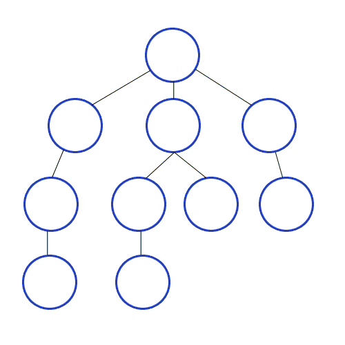
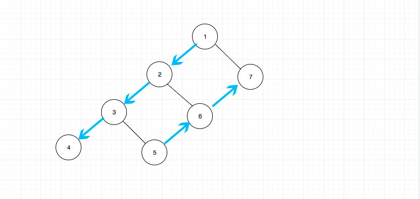

二叉树的遍历
二叉树的遍历算法
概述
二叉树作为一个基础的数据结构，遍历算法作为一个基础的算法，两者结合当然是经典的组合了。很多题目都会有 ta 的身影，有直接问二叉树的遍历的，有间接问的。比如要你找到树中满足条件的节点，就是间接考察树的遍历，因为你要找到树中满足条件的点，就需要进行遍历。
你如果掌握了二叉树的遍历，那么也许其他复杂的树对于你来说也并不遥远了
二叉数的遍历主要有前中后遍历和层次遍历。 前中后属于 DFS，层次遍历属于 BFS。 DFS 和 BFS 都有着自己的应用，比如 leetcode 301 号问题和 609 号问题。
DFS 都可以使用栈来简化操作，并且其实树本身是一种递归的数据结构，因此递归和栈对于 DFS 来说是两个关键点。
DFS 图解：

(图片来自 https://github.com/trekhleb/javascript-algorithms/tree/master/src/algorithms/tree/depth-first-search)
BFS 的关键点在于如何记录每一层次是否遍历完成， 我们可以用一个标识位来表式当前层的结束。
首先不管是前中还是后序遍历，变的只是根节点的位置， 左右节点的顺序永远是先左后右。 比如前序遍历就是根在前面，即根左右。中序就是根在中间，即左根右。后序就是根在后面，即左右根。
下面我们依次讲解：
前序遍历
相关问题144.binary-tree-preorder-traversal
前序遍历的顺序是根-左-右
思路是：
- 先将根结点入栈
- 出栈一个元素，将右节点和左节点依次入栈
- 重复 2 的步骤
总结： 典型的递归数据结构，典型的用栈来简化操作的算法。
其实从宏观上表现为：自顶向下依次访问左侧链，然后自底向上依次访问右侧链， 如果从这个角度出发去写的话，算法就不一样了。从上向下我们可以直接递归访问即可，从下向上我们只需要借助栈也可以轻易做到。 整个过程大概是这样：

这种思路解题有点像我总结过的一个解题思路backtrack - 回溯法。这种思路有一个好处就是 可以统一三种遍历的思路. 这个很重要，如果不了解的朋友，希望能够记住这一点。
中序遍历
相关问题94.binary-tree-inorder-traversal
中序遍历的顺序是 左-根-右，根节点不是先输出，这就有一点点复杂了。
- 根节点入栈
- 判断有没有左节点，如果有，则入栈，直到叶子节点
此时栈中保存的就是所有的左节点和根节点。
- 出栈，判断有没有右节点，有则入栈，继续执行 2
值得注意的是，中序遍历一个二叉查找树（BST）的结果是一个有序数组，利用这个性质有些题目可以得到简化， 比如230.kth-smallest-element-in-a-bst， 以及98.validate-binary-search-tree
后序遍历
相关问题145.binary-tree-postorder-traversal
后序遍历的顺序是 左-右-根
这个就有点难度了，要不也不会是 leetcode 困难的 难度啊。
其实这个也是属于根节点先不输出，并且根节点是最后输出。 这里可以采用一种讨巧的做法， 就是记录当前节点状态，如果 1. 当前节点是叶子节点或者 2.当前节点的左右子树都已经遍历过了，那么就可以出栈了。
对于 1. 当前节点是叶子节点，这个比较好判断，只要判断 left 和 rigt 是否同时为 null 就好。
对于 2. 当前节点的左右子树都已经遍历过了， 我们只需要用一个变量记录即可。最坏的情况，我们记录每一个节点的访问状况就好了，空间复杂度 O(n) 但是仔细想一下，我们使用了栈的结构，从叶子节点开始输出，我们记录一个当前出栈的元素就好了，空间复杂度 O(1)， 具体请查看上方链接。
层次遍历
层次遍历的关键点在于如何记录每一层次是否遍历完成， 我们可以用一个标识位来表式当前层的结束。

具体做法：
- 根节点入队列， 并入队列一个特殊的标识位，此处是 null
- 出队列
- 判断是不是 null， 如果是则代表本层已经结束。我们再次判断是否当前队列为空，如果不为空继续入队一个 null，否则说明遍历已经完成，我们什么都不不用做
- 如果不为 null，说明这一层还没完，则将其左右子树依次入队列。
相关问题：
双色标记法
我们知道垃圾回收算法中，有一种算法叫三色标记法。 即：
- 用白色表示尚未访问
- 灰色表示尚未完全访问子节点
- 黑色表示子节点全部访问
那么我们可以模仿其思想，使用双色标记法来统一三种遍历。
其核心思想如下：
- 使用颜色标记节点的状态，新节点为白色，已访问的节点为灰色。
- 如果遇到的节点为白色，则将其标记为灰色，然后将其右子节点、自身、左子节点依次入栈。
- 如果遇到的节点为灰色，则将节点的值输出。
使用这种方法实现的中序遍历如下：
<pre class="calibre18">```
<span class="hljs-class"><span class="hljs-keyword">class</span> <span class="hljs-title">Solution</span>:</span>
<span class="hljs-function"><span class="hljs-keyword">def</span> <span class="hljs-title">inorderTraversal</span><span class="hljs-params">(self, root: TreeNode)</span> -> List[int]:</span>
WHITE, GRAY = <span class="hljs-params">0</span>, <span class="hljs-params">1</span>
res = []
stack = [(WHITE, root)]
<span class="hljs-keyword">while</span> stack:
color, node = stack.pop()
<span class="hljs-keyword">if</span> node <span class="hljs-keyword">is</span> <span class="hljs-keyword">None</span>: <span class="hljs-keyword">continue</span>
<span class="hljs-keyword">if</span> color == WHITE:
stack.append((WHITE, node.right))
stack.append((GRAY, node))
stack.append((WHITE, node.left))
<span class="hljs-keyword">else</span>:
res.append(node.val)
<span class="hljs-keyword">return</span> res
可以看出，实现上 WHITE 就表示的是递归中的第一次进入过程，Gray 则表示递归中的从叶子节点返回的过程。 因此这种迭代的写法更接近递归写法的本质。
如要实现前序、后序遍历，只需要调整左右子节点的入栈顺序即可。可以看出使用三色标记法， 其写法类似递归的形式，因此便于记忆和书写，缺点是使用了额外的内存空间。不过这个额外的空间是线性的，影响倒是不大。
> 虽然递归也是额外的线性时间，但是递归的栈开销还是比一个 0，1 变量开销大的。
## Morris 遍历
我们可以使用一种叫做 Morris 遍历的方法，既不使用递归也不借助于栈。从而在 O(1)O(1)O(1) 空间完成这个过程。